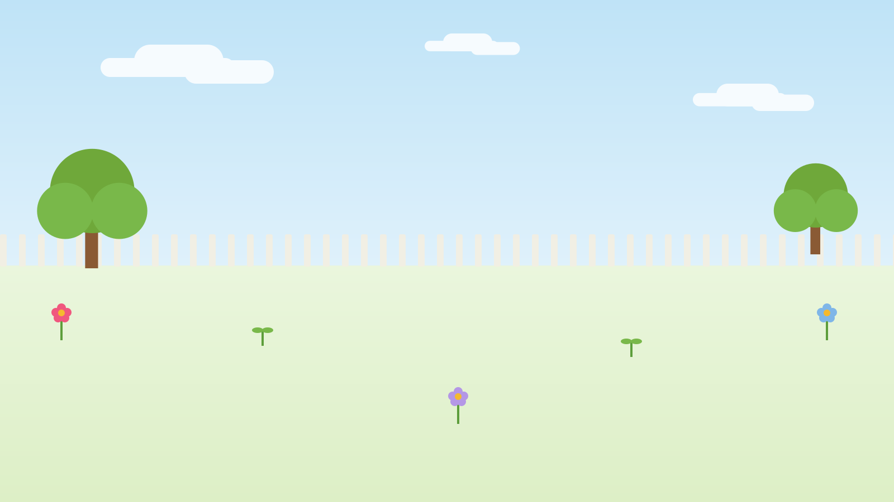

Oi, Ju!
Cerca de 7 em cada 100 crianças têm TDL
Transtorno do Desenvolvimento da Linguagem
TalkGarden
Aprender brincando, uma flor de cada vez.
Projeto Integrador · Curso Técnico em Informática · IFAM Campus Manaus Centro · 2026
Deborah Gabriely Moraes Martins, Julliana Emelin de Sousa Andrade e Nicoli Silva de Lima
Deborah Gabriely Moraes Martins, Julliana Emelin de Sousa Andrade e Nicoli Silva de Lima